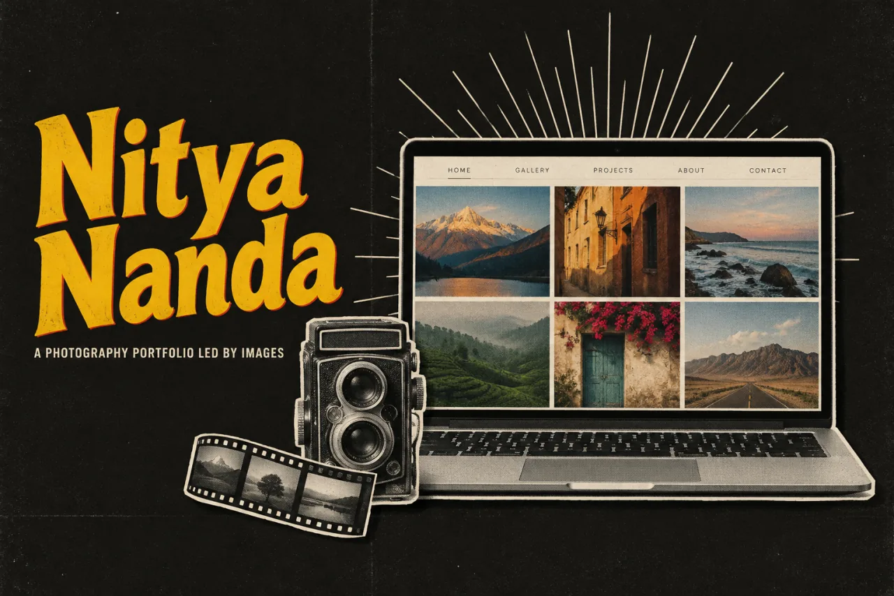

Nitya NandaDesign study · 4 min read
A photography site that leaves room for the photographs.
A photography portfolio concept with a deliberately restrained interface and two clear ways into the work.
Read the case study

The original full-page concept: images carry the story and contact closes the sequence.
View full size ↗01 The problem
How much interface does an image-led portfolio actually need?
A photography portfolio needs to show the work before asking visitors to read a long introduction. The Nitya Nanda concept explores a restrained structure with About, Work, and Contact destinations, an image-led opening, and separate professional and freelance collections.
Designed for Person considering a photographer. See a coherent body of work and begin an enquiry.
User context Design assumption
Looking for a relevant style and a way to discuss a shoot.
- The friction
- A broad gallery can make relevance hard to judge.
- Design implication
- Use collections and a clear contact route.
Example situation · illustrative scenario. Imagine choosing a photographer. You want to see relevant work, get a feel for the person behind it, and know how to begin an enquiry.
02 The outcome
A body of work before a sales pitch.
I designed a restrained portfolio with professional and freelance collections, a small navigation system and a contact destination. The layout lets visitors browse images before deciding to make an enquiry. The biography and photography credentials in the concept are illustrative.
More about the experience
- Images carry the story. The concept keeps the interface around a large body of work.
- Contact closes the sequence. The enquiry form gives interest somewhere to go.
03 Research & direction
Letting the work speak
The concept uses three familiar destinations and two work groupings to keep the route through the photography understandable.
Original photography-portfolio concept
- 2
- work categories
- 3
- primary destinations
- Image-led
- visual hierarchy
My direction. I treated restraint as a structural choice: let the images carry the first impression, then give the visitor a practical endpoint.
More about the original process
The available source is a single long visual concept. I traced how the page introduces the photographer, groups the work, and leads to the contact form. The listed shoots, locations, and credentials are illustrative portfolio content; the artifact does not substantiate them as real commissions.
This retrospective draws design observations from the page itself. No original audience research, client engagement record, or booking measurements accompany the concept.
- See
Let images establish the first impression.
- Explore
Choose a relevant collection.
- Connect
Start an enquiry with clear expectations.
04 Design decisions
Let visitors browse the photographs.
Open a decision to see the reasoning and trade-off.
01Keep the navigation vocabulary small
The page repeats About, Work, and Contact around an image-led presentation.
Why this matters. These are familiar questions for someone considering a creative professional and make the portfolio easy to orient within.
The trade-off. Repeated navigation should help orientation rather than consume space. Today I would test a single persistent version on smaller screens.
02Separate two ways of reading the portfolio
Professional and freelance work have their own grouped image collections with captions.
Why this matters. The distinction gives visitors a route based on the kind of commission they are considering.
The trade-off. The grouping is a design assumption. Real enquiries might be better served by subject, service, or photographic style instead.
03Give the visual journey a practical endpoint
A short contact form follows the portfolio, with additional work and consultation links.
Why this matters. Someone convinced by the images should have a direct route to starting a conversation.
The trade-off. The concept stops at submission. A complete service needs clear expectations, error messages, and confirmation of what happens next.
05 Reflection
A quiet interface still needs to give clear directions.
I would spend the next pass on selecting images, writing useful captions and checking loading performance. The interface has already done enough when it helps someone understand the work and find a way to get in touch.
What I would evaluate next proposed work
- ask visitors choosing a photographer to identify a relevant body of work and start an enquiry; observe which category language they expect.
- responsive image sizes, descriptive alternatives, keyboard access, and a complete form confirmation and error flow.
Change a token. See what it changes.